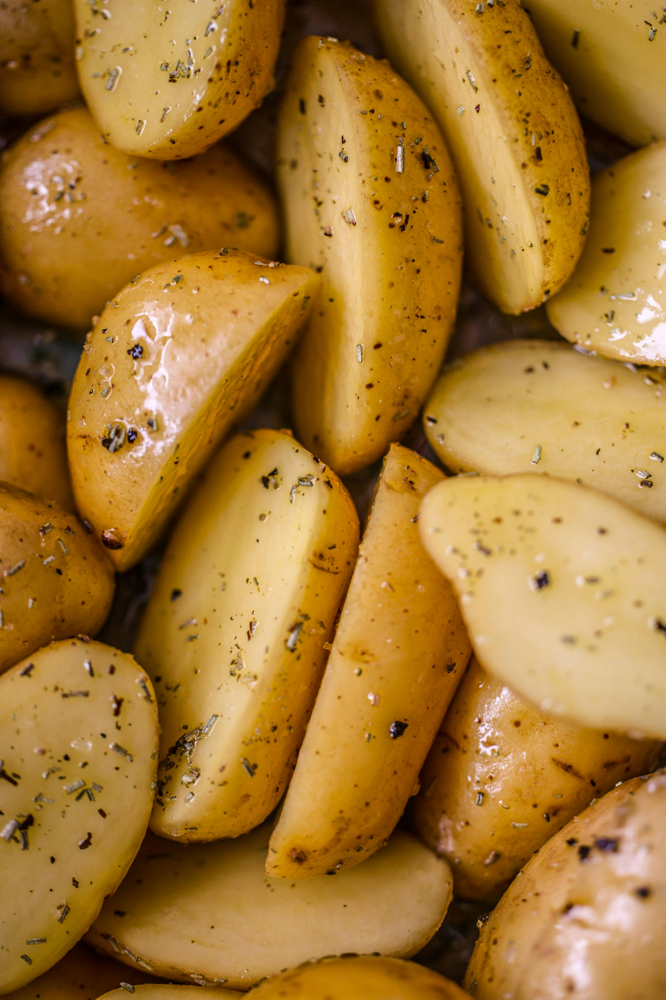

Baked Potatoes

Photo by Patrick.
Description
Baked potatoes are a great main course dish that can be complimented by any sauce of your choice.
Ingredients
- Potatoes.
- Herbs: parsley, dill.
- Spices: Ground garlic, black pepper.
- Salt.
- Vegetable oil.
Steps
- Peel and slice the potates.
- Put potatoes in a bowl, pour a little vegetable oil, add spices, herbs and salt to taste, and mix.
- Preheat the oven to about 170C.
- Put baking paper on a baking tray, and transfer all the potatoes onto it, and move the tray into an oven.
- Set the timer for 40 minutes and then raise the temperature up to 250C so the potatoes are crusty on a surface.
- When the potatoes have a desired level of crispiness, take the tray out and let it cool for a bit.
Home